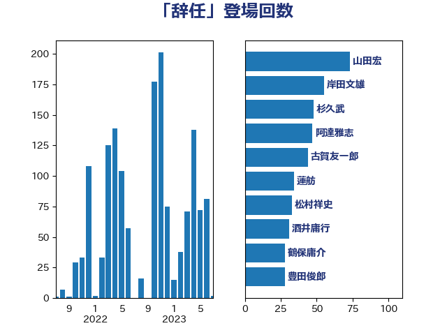

単語「辞任」

| 山田宏 | 自由民主党 | 73 回 |
| 岸田文雄 | 自由民主党 | 55 回 |
| 杉久武 | 公明党 | 48 回 |
| 阿達雅志 | 自由民主党 | 47 回 |
| 古賀友一郎 | 自由民主党 | 44 回 |
| 蓮舫 | 立憲民主党 | 34 回 |
| 松村祥史 | 自由民主党 | 33 回 |
| 酒井庸行 | 自由民主党 | 31 回 |
| 鶴保庸介 | 自由民主党 | 28 回 |
| 豊田俊郎 | 自由民主党 | 28 回 |
| 山口俊一 | 自由民主党 | 28 回 |
| 石橋通宏 | 立憲民主党 | 27 回 |
| 矢倉克夫 | 公明党 | 26 回 |
| 佐藤信秋 | 自由民主党 | 26 回 |
| 宮沢洋一 | 自由民主党 | 25 回 |
| 三原じゅん子 | 自由民主党 | 23 回 |
| 古川俊治 | 自由民主党 | 22 回 |
| 松沢成文 | 日本維新の会 | 21 回 |
| 斎藤嘉隆 | 立憲民主党 | 21 回 |
| 吉川沙織 | 立憲民主党 | 21 回 |
| 馬場成志 | 自由民主党 | 18 回 |
| 長谷川岳 | 自由民主党 | 18 回 |
| 舟山康江 | 国民民主党 | 18 回 |
| 浮島智子 | 公明党 | 18 回 |
| 河野義博 | 公明党 | 17 回 |
| 高橋克法 | 自由民主党 | 16 回 |
| 平木大作 | 公明党 | 16 回 |
| 青木一彦 | 自由民主党 | 15 回 |
| 平口洋 | 自由民主党 | 15 回 |
| 上野賢一郎 | 自由民主党 | 15 回 |
| 滝沢求 | 自由民主党 | 14 回 |
| 根本匠 | 自由民主党 | 14 回 |
| 徳永エリ | 立憲民主党 | 14 回 |
| 山下雄平 | 自由民主党 | 14 回 |
| 柚木道義 | 立憲民主党 | 13 回 |
| 山谷えり子 | 自由民主党 | 13 回 |
| 尾辻秀久 | 無所属 | 13 回 |
| 古賀之士 | 立憲民主党 | 13 回 |
| 小沢雅仁 | 立憲民主党 | 12 回 |
| 佐々木さやか | 公明党 | 11 回 |
| 細田博之 | 自由民主党 | 10 回 |
| 山岸一生 | 立憲民主党 | 10 回 |
| 野田国義 | 立憲民主党 | 9 回 |
| 森英介 | 自由民主党 | 9 回 |
| 山東昭子 | 自由民主党 | 9 回 |
| 小川淳也 | 立憲民主党 | 9 回 |
| 大塚拓 | 自由民主党 | 9 回 |
| 塚田一郎 | 自由民主党 | 9 回 |
| 青木愛 | 立憲民主党 | 8 回 |
| 高木毅 | 自由民主党 | 7 回 |
| 福岡資麿 | 自由民主党 | 7 回 |
| 福山哲郎 | 立憲民主党 | 7 回 |
| 泉健太 | 立憲民主党 | 7 回 |
| 森屋宏 | 自由民主党 | 7 回 |
| 竹内譲 | 公明党 | 6 回 |
| 石田真敏 | 自由民主党 | 6 回 |
| 石川大我 | 立憲民主党 | 6 回 |
| 城内実 | 自由民主党 | 6 回 |
| 井上哲士 | 日本共産党 | 6 回 |
| 逢坂誠二 | 立憲民主党 | 5 回 |
| 大西健介 | 立憲民主党 | 5 回 |
| 伊藤岳 | 日本共産党 | 5 回 |
| 三浦信祐 | 公明党 | 5 回 |
| 長友慎治 | 国民民主党 | 4 回 |
| 石井準一 | 自由民主党 | 4 回 |
| 猪口邦子 | 自由民主党 | 4 回 |
| 浅野哲 | 国民民主党 | 4 回 |
| 江田憲司 | 立憲民主党 | 4 回 |
| 松下新平 | 自由民主党 | 4 回 |
| 本村伸子 | 日本共産党 | 4 回 |
| 山本香苗 | 公明党 | 4 回 |
| 小西洋之 | 立憲民主党 | 4 回 |
| 宮本岳志 | 日本共産党 | 4 回 |
| 塩川鉄也 | 日本共産党 | 4 回 |
| 吉田はるみ | 立憲民主党 | 4 回 |
| 黄川田仁志 | 自由民主党 | 3 回 |
| 鬼木誠 | 立憲民主党 | 3 回 |
| 関芳弘 | 自由民主党 | 3 回 |
| 鈴木馨祐 | 自由民主党 | 3 回 |
| 赤澤亮正 | 自由民主党 | 3 回 |
| 落合貴之 | 立憲民主党 | 3 回 |
| 羽田次郎 | 立憲民主党 | 3 回 |
| 義家弘介 | 自由民主党 | 3 回 |
| 米山隆一 | 立憲民主党 | 3 回 |
| 笹川博義 | 自由民主党 | 3 回 |
| 稲田朋美 | 自由民主党 | 3 回 |
| 渡海紀三朗 | 自由民主党 | 3 回 |
| 浜田靖一 | 自由民主党 | 3 回 |
| 橋本岳 | 自由民主党 | 3 回 |
| 松野博一 | 自由民主党 | 3 回 |
| 木原稔 | 自由民主党 | 3 回 |
| 後藤祐一 | 立憲民主党 | 3 回 |
| 岩田和親 | 自由民主党 | 3 回 |
| 宮内秀樹 | 自由民主党 | 3 回 |
| 大西英男 | 自由民主党 | 3 回 |
| 大串博志 | 立憲民主党 | 3 回 |
| 古屋範子 | 公明党 | 3 回 |
| 原口一博 | 立憲民主党 | 3 回 |
| 伊藤忠彦 | 自由民主党 | 3 回 |
| 中曽根弘文 | 自由民主党 | 3 回 |
| 下条みつ | 立憲民主党 | 3 回 |
| 三ッ林裕巳 | 自由民主党 | 3 回 |
| 高木真理 | 立憲民主党 | 2 回 |
| 階猛 | 立憲民主党 | 2 回 |
| 鎌田さゆり | 立憲民主党 | 2 回 |
| 鈴木敦 | 国民民主党 | 2 回 |
| 鈴木宗男 | 日本維新の会 | 2 回 |
| 金村龍那 | 日本維新の会 | 2 回 |
| 赤嶺政賢 | 日本共産党 | 2 回 |
| 西田昌司 | 自由民主党 | 2 回 |
| 西村智奈美 | 立憲民主党 | 2 回 |
| 西村康稔 | 自由民主党 | 2 回 |
| 菊田真紀子 | 立憲民主党 | 2 回 |
| 簗和生 | 自由民主党 | 2 回 |
| 竹詰仁 | 国民民主党 | 2 回 |
| 稲津久 | 公明党 | 2 回 |
| 福島みずほ | 社会民主党 | 2 回 |
| 源馬謙太郎 | 立憲民主党 | 2 回 |
| 沢田良 | 日本維新の会 | 2 回 |
| 武見敬三 | 自由民主党 | 2 回 |
| 武井俊輔 | 自由民主党 | 2 回 |
| 森本真治 | 立憲民主党 | 2 回 |
| 小宮山泰子 | 立憲民主党 | 2 回 |
| 奥野総一郎 | 立憲民主党 | 2 回 |
| 北村経夫 | 自由民主党 | 2 回 |
| 高橋千鶴子 | 日本共産党 | 1 回 |
| 高木かおり | 日本維新の会 | 1 回 |
| 高市早苗 | 自由民主党 | 1 回 |
| 音喜多駿 | 日本維新の会 | 1 回 |
| 長峯誠 | 自由民主党 | 1 回 |
| 鈴木義弘 | 国民民主党 | 1 回 |
| 野田佳彦 | 立憲民主党 | 1 回 |
| 野村哲郎 | 自由民主党 | 1 回 |
| 舩後靖彦 | れいわ新選組 | 1 回 |
| 羽生田俊 | 自由民主党 | 1 回 |
| 緒方林太郎 | 無所属 | 1 回 |
| 紙智子 | 日本共産党 | 1 回 |
| 穀田恵二 | 日本共産党 | 1 回 |
| 石井苗子 | 日本維新の会 | 1 回 |
| 石井章 | 日本維新の会 | 1 回 |
| 牧山ひろえ | 立憲民主党 | 1 回 |
| 熊谷裕人 | 立憲民主党 | 1 回 |
| 滝波宏文 | 自由民主党 | 1 回 |
| 渡辺創 | 立憲民主党 | 1 回 |
| 永岡桂子 | 自由民主党 | 1 回 |
| 水野素子 | 立憲民主党 | 1 回 |
| 櫛渕万里 | れいわ新選組 | 1 回 |
| 榛葉賀津也 | 国民民主党 | 1 回 |
| 森山浩行 | 立憲民主党 | 1 回 |
| 森屋隆 | 立憲民主党 | 1 回 |
| 梅谷守 | 立憲民主党 | 1 回 |
| 林芳正 | 自由民主党 | 1 回 |
| 東徹 | 日本維新の会 | 1 回 |
| 村田享子 | 立憲民主党 | 1 回 |
| 杉尾秀哉 | 立憲民主党 | 1 回 |
| 末松信介 | 自由民主党 | 1 回 |
| 早坂敦 | 日本維新の会 | 1 回 |
| 日下正喜 | 公明党 | 1 回 |
| 川田龍平 | 立憲民主党 | 1 回 |
| 岩谷良平 | 日本維新の会 | 1 回 |
| 岩渕友 | 日本共産党 | 1 回 |
| 山本太郎 | れいわ新選組 | 1 回 |
| 小林茂樹 | 自由民主党 | 1 回 |
| 寺田静 | 無所属 | 1 回 |
| 寺田稔 | 自由民主党 | 1 回 |
| 室井邦彦 | 日本維新の会 | 1 回 |
| 太田房江 | 自由民主党 | 1 回 |
| 大塚耕平 | 国民民主党 | 1 回 |
| 城井崇 | 立憲民主党 | 1 回 |
| 勝部賢志 | 立憲民主党 | 1 回 |
| 伊東信久 | 日本維新の会 | 1 回 |
| 仁比聡平 | 日本共産党 | 1 回 |
| 井上信治 | 自由民主党 | 1 回 |
| 中島克仁 | 立憲民主党 | 1 回 |
| 中司宏 | 日本維新の会 | 1 回 |
| 上月良祐 | 自由民主党 | 1 回 |
| おおつき紅葉 | 立憲民主党 | 1 回 |